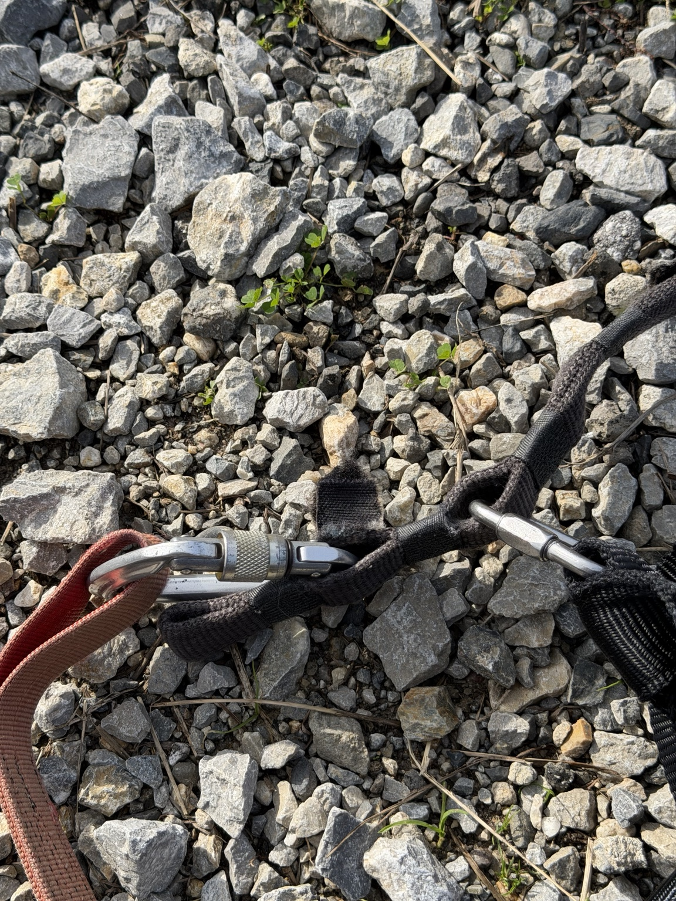
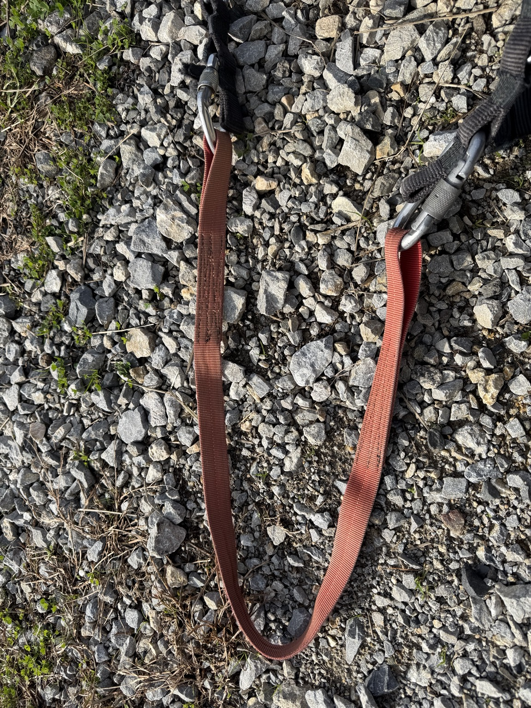

グライダーのサイズによってコントロールバーの大きさが異なるため、同じハーネスを使うと体に対するコントロールバーの位置が変わります。京都ハングではM・Sの2サイズを使い分けます。
サイズと使用する機体
| Mサイズ | 170用。190はスイングラインをMサイズに合わせた長さにしているため、Mを使用。330・225も通常はMを使用。 |
|---|---|
| Sサイズ | 140・145用。330の体験飛行では、地面との距離を確保するためSを使用。 |
個人のグライダーで使う場合
個人の機体も、使用するハーネスに合わせてスイングラインの長さを調整します。ただし、もともと付いているスイングラインの長さによっては、合うハーネスのサイズが異なることがあります。
最初に必ずシンさんに適合するサイズを確認し、その後は毎回同じサイズのハーネスを使用してください。
Sサイズ（140・145用）
ラピッドリングがベルトの端から3つ目の位置に留まっています。Mよりベルト1段分だけ地面から浮く、小さいサイズです。

写真2：Sサイズ。タップすると写真を拡大できます。Vブライダルの位置と色
Vブライダルのカラビナは、M・Sともにラピッドリングの1段下に取り付けます。
体験飛行や初心者の練習では、バイクの位置からVブライダルが前に来ていることを確認しやすいよう、赤色のVブライダルを使用してください。黒色は見づらいためです。ある程度練習が進んだ人は、赤色である必要はありません。

写真3：赤色のVブライダル。タップすると写真を拡大できます。使用前の確認ハーネスのサイズ、ラピッドリングやカラビナの取付位置、接続状態は使用前にシンさんと確認してください。ここに掲載した位置は京都ハングの当該用具についての説明です。
← 台地練習の前にすることへ戻る